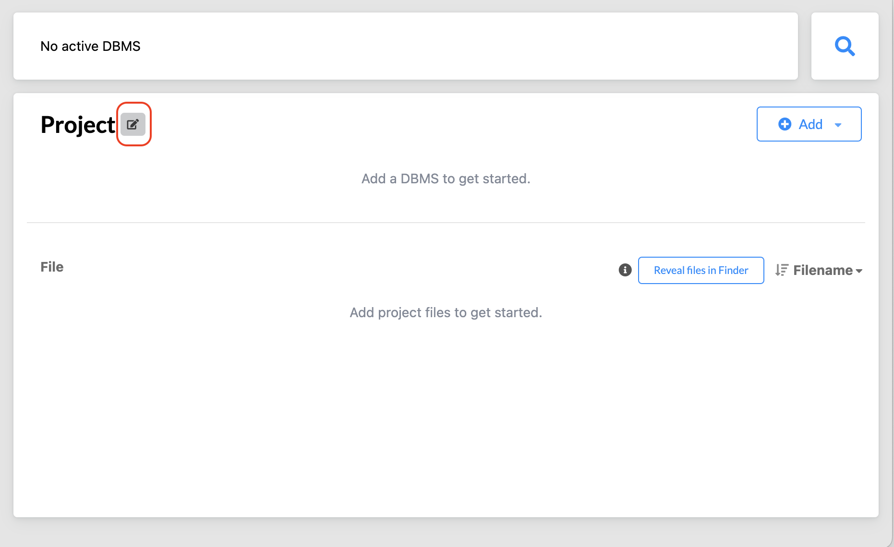
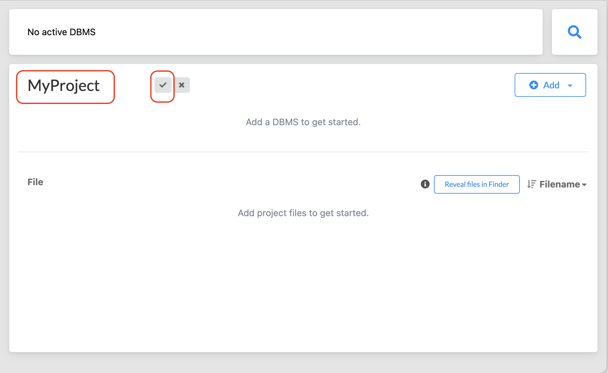
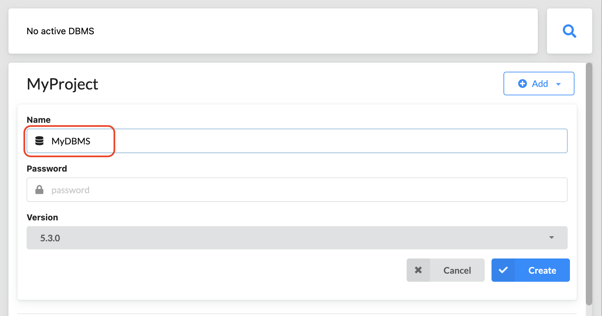
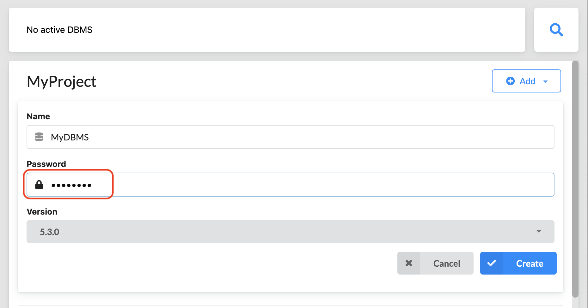
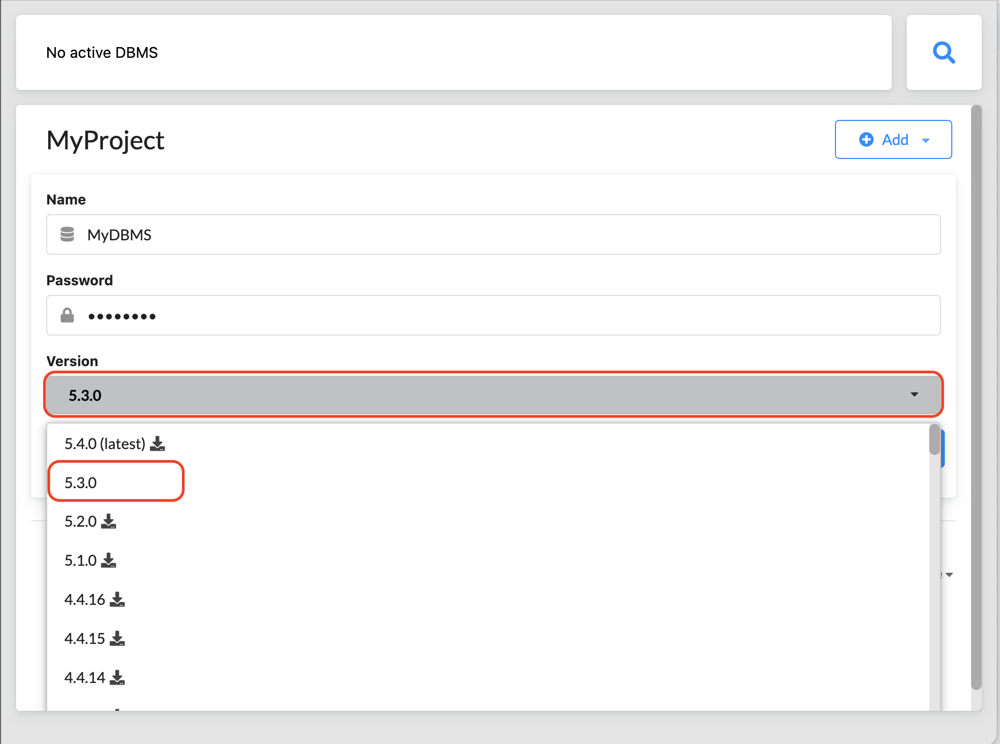
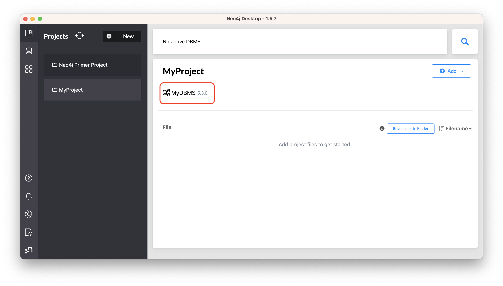
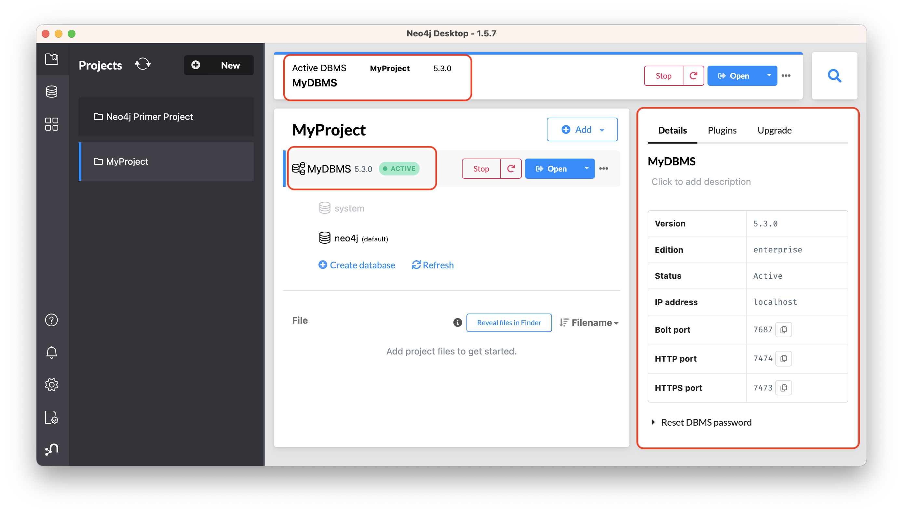

How-To: Import CSV data with Neo4j Desktop
Introduction
Neo4j Desktop provides a user-friendly interface for creating and starting Neo4j instances, adding or removing plugins, changing configurations, and other functionality. It also includes some shortcuts and easy access for importing files (such as CSVs) into Neo4j.
In this guide, you will work with a zipped folder containing three CSV files and import the data to a graph with Neo4j Desktop. The CSV files contain data for products, orders, and order line items. You will look at the data in the files later in this guide.
Creating and starting the Neo4j instance
|
If you already know how to create a Project in Neo4j Desktop, a Neo4j instance (DBMS), and start the DBMS, you can skip to the next step: Adding CSV files to the import folder. |
If you open Neo4j Desktop for the first time, you will see a Neo4j Primer Project with the Movie Database already started. You can use this database if you want to begin learning about using Neo4j and Cypher®. However, you can create your own Project which can contain one or more DBMSs.
Let’s take a look on how to create a new Project, and how to create and start a Neo4j instance in Neo4j Desktop.
-
You can only have a single DBMS running at once. To start a new one, you must first stop the DBMS that is active by clicking the
Stopbutton on the top bar. As the result, you can see that there will be No active DBMS. -
To add a new project, go to the Projects drawer on the left sidebar by clicking the icon and then click the
Newbutton in front of Projects. This creates a project named Project. -
To change the name of a project, hover its name and select the
Editbutton.Type a name for the project and select the
Checkbutton to save it. -
Next, you will create a local DBMS in a project. Click the
Addbutton beside the name of the project where you want to add the DBMS and then select Local DBMS. This opens a dialog box where you can specify the details of the DBMS. -
Now you can name your DBMS. You can use the default name Graph DBMS, but it is recommended to rename it to help you with identifying it. For more details, see Upgrade and Migration Guide → Database naming rules.
Here MyDBMS is specified as the name:
 -
You must specify a password for the DBMS.
Starting with Neo4j 5.3, the initial password must be at least eight characters long.
 -
Neo4j Desktop automatically creates a DBMS with default version, but you can select a different version for it. However, you can select a different version. Keep in mind that if there is a down arrow shown next to the version, this means that Neo4j Desktop will need to download resources for that particular version of the DBMS. To do this you must be connected to the Internet.
 -
After specifying the details for the DBMS, click the
Createbutton. Here is what you should see after the DBMS is successfully created: -
Since you cannot have more than one active DBMS at once, make sure to stop any running instances before starting your newly-created one by hovering to the right of its name and clicking the
Startbutton.The DBMS will take a few seconds to start. If successful, you should see something like this:

After the DBMS is started, you can access it through clients such as Neo4j Browser and Neo4j Bloom running on your system. In Neo4j Desktop, the DBMS is an Enterprise Server, but it can only be accessed locally.
Adding CSV files to the import folder
First, download this zip file. Uncompress it to yield three CSV files for products, orders, and order details, and then add them to the import folder in Neo4j Desktop.
You can open a finder window by hovering over the three dots to the right side of the started DBMS and select Open folder, then Import:
Another option is to copy or move the three CSV files into the import directory on your system. For more information on Neo4j file locations, see Operations Manual → Default file locations.
Now that your files are in the import folder, you can import the data into the database managed by the DBMS.
You will use the current table and column format in the CSV files and translate it into nodes and relationships.
This can be done in a few different ways, but you will use Cypher’s LOAD CSV command in this guide.
LOAD CSV
LOAD CSV is a built-in command in Cypher that allows you to read CSV files and append regular Cypher queries to create or update the data as a graph.
You can also use LOAD CSV without creating the graph to output samples, counts, or distributions.
This helps to detect incorrect header column counts, delimiters, quotes, escapes, or spelling of header names before the data is written and stored.
To enter and run Cypher queries on a started DBMS, you can:
-
Use Neo4j Browser:
-
Click the
Openbutton for the started DBMS. -
Type or copy Cypher queries into the edit pane at the top (Cypher editor).
-
Execute the Cypher queries with the
playbutton on the right.
-
-
Use Cypher Shell:
-
Click the drop-down menu to the right of the
Openbutton and select Terminal. -
Enter
bin/cypher-shell. -
Enter neo4j for the user.
-
Enter the password you specified for the DBMS.
-
Use
:exitto quit.
-
|
All Cypher queries must end with semicolon |
Earlier you downloaded the .zip file and copied its CSV files to the import folder for the DBMS.
It is recommended that before you insert anything into your graph database, you should inspect the data in the files to be added to the import folder.
To do this, you can use the LOAD CSV statement.
If you opened the files previously, you may have noticed that two of the files have headers and one does not (products.csv).
To inspect each file, check how many lines there are in the CSV files to ensure they were not corrupted or cut off during a potential export process.
For files with headers, you can add the WITH HEADERS clause after LOAD CSV, so that it excludes the header row in the count, and only counts the rows of data.
Here are the Cypher queries to be used:
//count data rows in products.csv (no headers)
LOAD CSV FROM 'file:///products.csv' AS row
RETURN count(row);//count data rows in orders.csv (headers)
LOAD CSV WITH HEADERS FROM 'file:///orders.csv' AS row
RETURN count(row);//count data rows in order-details.csv (headers)
LOAD CSV WITH HEADERS FROM 'file:///order-details.csv' AS row
RETURN count(row);Running these statements should return the following counts:
-
77 rows for products.csv
-
830 rows for orders.csv
-
2155 rows for order-details.csv
View data with LOAD CSV
Next, you can take a look at what the data looks like in the CSV files and how LOAD CSV sees it.
The only line you need to change from the Cypher query above is the RETURN clause.
Since these files have several rows, use LIMIT to only get a sample.
//view data rows in products.csv
LOAD CSV FROM 'file:///products.csv' AS row
RETURN row
LIMIT 3;Your results should look something like this:
| row |
|---|
["1", "Chai", "18"] |
["2", "Chang", "19"] |
["3", "Aniseed Syrup", "10"] |
//count data rows in orders.csv (headers)
LOAD CSV WITH HEADERS FROM 'file:///orders.csv' AS row
RETURN row
LIMIT 5;Your results should look something like this:
| row |
|---|
|
|
|
|
|
//count data rows in order-details.csv (headers)
LOAD CSV WITH HEADERS FROM 'file:///order-details.csv' AS row
RETURN row
LIMIT 8;Your results should look something like this:
| row |
|---|
|
|
|
|
|
|
|
|
Notice that orders.csv and order-details.csv return data in a different format than products.csv.
This is because those files have headers, so the column names are returned with the values for those rows.
Since products.csv does not have column names, then LOAD CSV just returns the plain data row from the file.
Filtering loaded data with LOAD CSV
After inspecting the data, you may only want to view or load a subset of the data in the CSV file. You can filter what you view (or load) as follows:
//count data rows in orders.csv (headers)
LOAD CSV WITH HEADERS FROM 'file:///orders.csv' AS row
WITH row WHERE row.shipCountry = 'Germany'
RETURN row
LIMIT 5;Your results should look something like this:
| row |
|---|
|
|
|
|
|
Data types
The LOAD CSV command reads all values as a string.
No matter how the value appears in a file, it will be loaded as a string with LOAD CSV.
So, before you import, make sure you convert any values that are non-string.
There are a variety of conversion functions in Cypher. The ones you will use for this exercise are as follows:
-
toInteger(): converts a value to an integer. -
toFloat(): converts a value to a float (in this case, for monetary amounts). -
datetime(): converts a value to a DateTime.
We look at the values in each CSV file to determine what needs to be converted.
The values in the products.csv files are for productID, productName, and unitCost.
productID looks like an integer value that increases with each row, so you can convert this to an integer using the toInteger() function in Cypher.
productName can remain a string since it consists of characters.
The final column is the product unitCost.
Though the sample values from your inspection are all whole numbers, monetary amounts often have decimal place values.
For this reason, it is recommended to convert these values to floats using the toFloat() function.
Below is how you should run the Cypher query. Keep in mind that you are still not loading the values into Neo4j at this point. You will be just viewing the CSV files with converted values.
LOAD CSV FROM 'file:///products.csv' AS row
WITH toInteger(row[0]) AS productId, row[1] AS productName, toFloat(row[2]) AS unitCost
RETURN productId, productName, unitCost
LIMIT 3;Your results should look something like this:
| productId | productName | unitCost |
|---|---|---|
1 |
"Chai" |
18.0 |
2 |
"Chang" |
19.0 |
3 |
"Aniseed Syrup" |
10.0 |
Note that we are using collection positions (row[0], row[1], row[2]) to refer to the columns in the row and improve readability by using aliases to reference them in the return. In a file that has no headers, this is how to reference values in each position.
The values in the orders.csv (per the column names) are for orderID, orderDate, and shipCountry.
Again, you can evaluate the values and determine any conversions to apply.
OrderID looks like an integer, so you can convert that using the toInteger() function.
The orderDate column is certainly in a date format and will require us to format it using the datetime() function.
Finally, the shipCountry values are characters, so you can leave that as a string.
Just as you did with the last CSV files, let us look at the results of these conversions without importing the data.
LOAD CSV WITH HEADERS FROM 'file:///orders.csv' AS row
WITH toInteger(row.orderID) AS orderId, datetime(replace(row.orderDate,' ','T')) AS orderDate, row.shipCountry AS country
RETURN orderId, orderDate, country
LIMIT 5;Your results should look something like this:
| orderId | orderDate | country |
|---|---|---|
10248 |
"1996-07-04T00:00:00Z" |
"France" |
10249 |
"1996-07-05T00:00:00Z" |
"Germany" |
10250 |
"1996-07-08T00:00:00Z" |
"Brazil" |
10251 |
"1996-07-08T00:00:00Z" |
"France" |
10252 |
"1996-07-09T00:00:00Z" |
"Belgium" |
There was one tricky thing with this CSV in the orderDate column.
Neo4j’s datetime uses the ISO 8601 format which uses the delimiter T between the date and time values.
The CSV file does not have the 'T' joining the date and time values but has a space between them instead.
You used the replace() function to change the space to the character 'T' and get the string into the expected format.
Then, you wrapped the datetime() function around that to convert the changed string to a DateTime value.
The values in the order-details.csv (from column names) are for productID, orderID, and quantity.
Let us look at which ones need to be converted.
productID is also from the products.csv file, where you converted that value to an integer.
You will do the same here to ensure you match formats.
The orderID field contains values from the orders.csv file, so you will match your previous conversion and translate this field to an integer, as well.
The quantity field in this file is a numeric value.
You can convert this to an integer with the toInteger() function you have been using.
The results of these conversions are in the code below. Remember that you still are not loading any data yet.
LOAD CSV WITH HEADERS FROM 'file:///order-details.csv' AS row
WITH toInteger(row.productID) AS productId, toInteger(row.orderID) AS orderId, toInteger(row.quantity) AS quantityOrdered
RETURN productId, orderId, quantityOrdered
LIMIT 8;Your results should look something like this:
| productId | orderId | quantityOrdered |
|---|---|---|
11 |
10248 |
12 |
42 |
10248 |
10 |
72 |
10248 |
5 |
14 |
10249 |
9 |
51 |
10249 |
40 |
41 |
10250 |
10 |
51 |
10250 |
35 |
65 |
10250 |
15 |
Loading the data
Now that you have determined that the CSV file data looks good, and you have verified how LOAD CSV sees the data and converted any non-string values, you are almost ready to create the data in our graph database.
To do that, you will use Cypher statements alongside the LOAD CSV commands you used above.
The LOAD CSV will read the files, and the Cypher statements will create the data in your database.
Graph data model
An important step you need before writing Cypher statements, though, is to determine what the graph structure should look like once you import your file data. After all, importing the data from the existing table and column data will not provide the value you want to achieve from a graph. To utilize the graph database fully, you need a graph data model.
Though there are a variety of ways to organize the products and orders in your files, this will be addressed in another guide. Use the following version of the model for this exercise:
You have two nodes - one for a product and one for an order.
Each of those nodes have properties from the CSV files.
For the Product, you have ID, name, and unit cost.
For the Order, you have ID, date/time, and country where it is going to.
The order-details.csv file defines the relationship between those two nodes.
It has the product ID, the order ID it belongs to, and the quantity of the product in the order.
In the data model, these become the CONTAINS relationship between Product and Order nodes.
The property quantityOrdered is also included to the relationship because the product quantity value only exists when a product is related to an order.
Now that you know the types of nodes and relationships you will have and the properties involved, you can construct the Cypher statements to create the data for this model.
Avoiding duplicates and increasing performance
One final thing you need to think about before you create data in the graph is ensuring values are unique and performance is efficient. To handle this, you can use constraints. Just as with other databases, constraints ensure data integrity criteria are not violated, while simultaneously indexing the property with the constraint for faster query performance.
There are cases for applying indexes to a database before any data is imported and when there is already existing data.
In this exercise, you will add two constraints before you create any data - one for productId and one for orderId.
This will ensure that, when you create a new node of each of those types or a relationship to connect them, you know the entities are unique and indexed.
Below is the Cypher for adding constraints:
CREATE CONSTRAINT UniqueProduct FOR (p:Product) REQUIRE p.id IS UNIQUE;
CREATE CONSTRAINT UniqueOrder FOR (o:Order) REQUIRE o.id IS UNIQUE;Cypher queries
Now you are ready to write the Cypher for creating the data in the graph.
You could use the CREATE clause where you are sure that you will not have duplicate rows in your CSV file and use MATCH to find existing data for updates.
However, since it is hard to completely scrub all data and import perfectly clean data from any source, you will use the MERGE clause to check if the data already exists.
If the node or relationship exists, Cypher will match and return them (without any writes), but if they do not exist, Cypher will insert it.
Using MERGE can have some performance overhead, but often it is the better approach to maintain high data integrity.
|
Why use both constraints and If you use both, you avoid terminating your load statements due to constraint violations, and you also ensure you don’t accidentally create duplicates in adhoc queries. |
To start loading the products into the graph, use the LOAD CSV statement from above and then run the Cypher query to create the data from the CSV files into your model.
Remember to use MERGE to check whether the Product already exists.
The properties will be set to the converted values you handled earlier in this guide.
LOAD CSV FROM 'file:///products.csv' AS row
WITH toInteger(row[0]) AS productId, row[1] AS productName, toFloat(row[2]) AS unitCost
MERGE (p:Product {productId: productId})
SET p.productName = productName, p.unitCost = unitCost
RETURN count(p);If you run that statement, it will return the number of product nodes (count(p)) that were created in the database.
You can cross-check that number with the number of rows in the CSV file from earlier (77 rows in products.csv).
You can also run a validation query to return a sample of nodes and review that the properties look accurate.
//validate products loaded correctly
MATCH (p:Product)
RETURN p LIMIT 20;Here are the results in Neo4j Browser:
Next, you will load the orders.
Again, since you want to verify you do not create duplicate Order nodes, you can use the MERGE clause.
Just as with products, you start with the LOAD CSV command, then add Cypher queries, and include your data conversions.
LOAD CSV WITH HEADERS FROM 'file:///orders.csv' AS row
WITH toInteger(row.orderID) AS orderId, datetime(replace(row.orderDate,' ','T')) AS orderDate, row.shipCountry AS country
MERGE (o:Order {orderId: orderId})
SET o.orderDateTime = orderDate, o.shipCountry = country
RETURN count(o);You can also run a validation query, as before, to verify the graph data looks correct.
//validate orders loaded correctly
MATCH (o:Order)
RETURN o LIMIT 20;Here are the results in Neo4j Browser:
Last, but not least, you will create the relationship between the products and the orders.
Since you expect all of your products and all of your orders to already exist in the graph (that data should have been loaded with the last two files), then you start with MATCH to find the existing Product and Order nodes.
Then, the MERGE statement will add the new relationship or match an existing one.
As you found when you ran a count on the order-details file above, there are 2,155 rows in the CSV.
While this is not a huge number for file imports, you will have Cypher commit the data to the database in batches to reduce the memory overhead of the transaction state.
For this, you can use the subquery CALL {…} IN TRANSACTIONS after the LOAD CSV clause.
The number of input rows is set with the modifier OF n ROWS (or ROW).
If omitted, the default batch size is 1000 rows.
For this exercise, you will ask Cypher to commit every 500 rows.
You could decrease this number if you have a lot of memory already allocated to other tasks, or if it is limited.
LOAD CSV WITH HEADERS FROM 'file:///order-details.csv' AS row
CALL {
WITH row
MATCH (p:Product {productId: toInteger(row.productID)})
MATCH (o:Order {orderId: toInteger(row.orderID)})
MERGE (o)-[rel:CONTAINS {quantityOrdered: toInteger(row.quantity)}]->(p)
} IN TRANSACTIONS OF 500 ROWS|
In Neo4j Browser, don’t forget to prepend the preceding Cypher query with |
Just as you did above, you can validate the data with the query below.
MATCH (o:Order)-[rel:CONTAINS]->(p:Product)
RETURN p, rel, o LIMIT 50;Here are the results in Neo4j Browser:
Wrapping up
You have successfully loaded three CSV files into a Neo4j graph database using Neo4j Desktop.
The LOAD CSV functionality, coupled with Cypher, is exceptionally useful for getting data from files into a graph structure.
The best way to advance your skills in this area is to load a variety of files for various datasets and models.
If you work through this exercise again at a later time, feel free to increase the challenge by coming up with your own data model for these files or try to load some other CSV files to a graph.
If you have any questions or need assistance using LOAD CSV, reach out to us on the Community Site.
Was this page helpful?